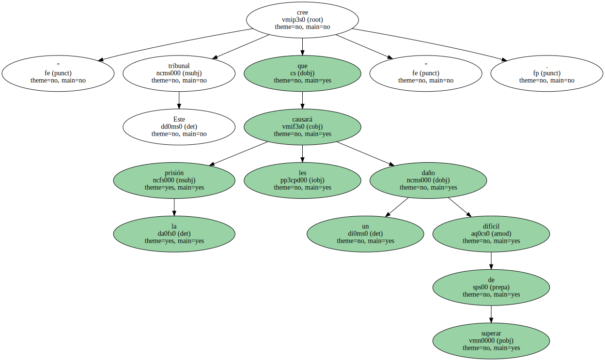
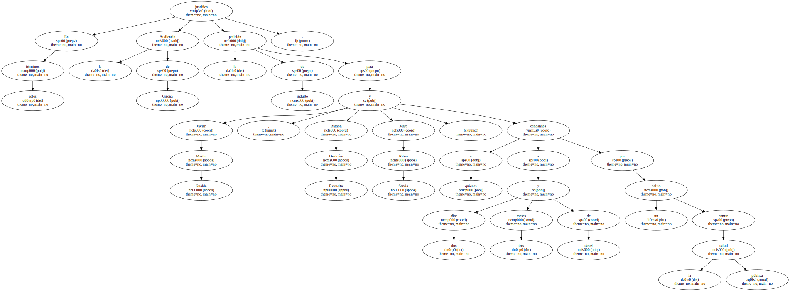
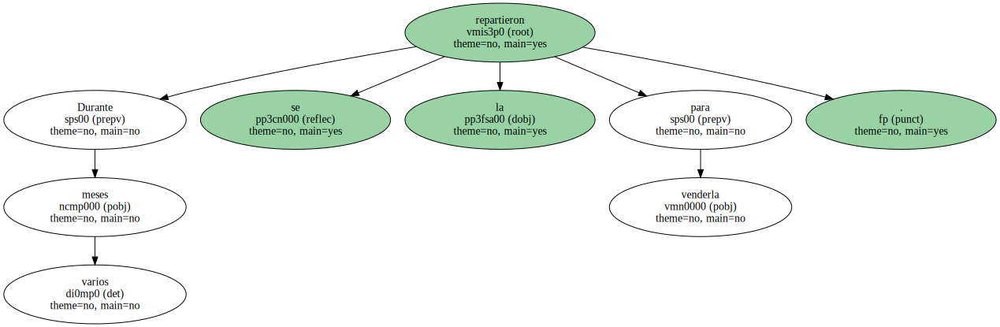
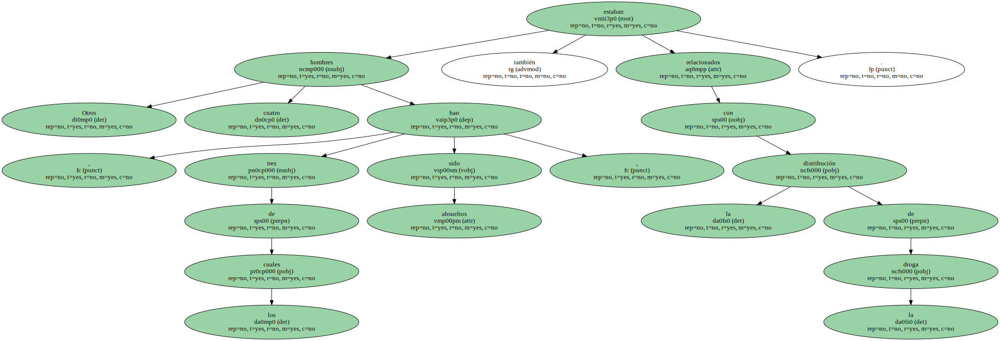
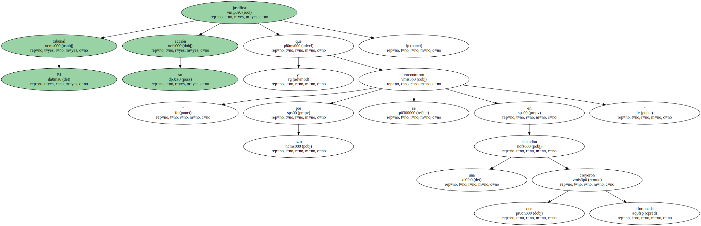

" Este tribunal cree que la prisión les causará un daño difícil de superar ".
En estos términos justifica la Audiencia de Girona la petición de indulto para Javier Martín Gualda , Ramon Deulofeu Revuelta y Marc Ribas Servià , a quienes condenaba a dos años y tres meses de cárcel por un delito contra la salud pública.
La sentencia considera probado que , a finales de septiembre de 1998 , los jóvenes se encontraron 25 kilos de cocaína en la playa Fonda de Begur , donde residen.

Durante varios meses se la repartieron para venderla.
Otros cuatro hombres , tres de los cuales han sido absueltos , también estaban relacionados con la distribución de la droga.
El tribunal justifica su acción " ya que por azar se encontraron en una situación que creyeron afortunada ".
